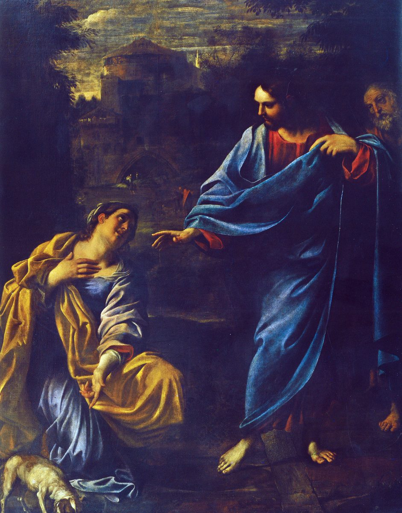

Matthew 15 — The Mister Translation

Carracci puts a small white dog directly at the kneeling woman's knees — the one visual detail in the whole composition that names the exchange the text is actually having (“even the little dogs eat the crumbs that fall from their masters’ table”). Christ’s open hand answers her raised one mid-conversation, not yet a blessing; the disciple folded in behind him watches without acting, exactly as the Gospel has the Twelve only ASKING Jesus to send her away rather than intervening themselves. The Levantine townscape behind them is generic invention — no attempt at the real topography of Tyre or Sidon.
{kind=link}
Translator’s Notes
Tradition versus commandment, stated as the terms of the argument. The Pharisees’ question is about ritual — hand-washing before a meal, nowhere commanded in the Law itself but built up as a fence around it by generations of oral teaching (paradosis, what is “handed down”). Jesus does not answer their question; he reframes it, trading their “tradition” for “the commandment of God” in the very next breath — the whole first half of this chapter runs on that substitution.
⚠ A gift that need not go anywhere. The example is the Corban vow (see the dictionary’s own entry on qorban/korban, first met at Leviticus 1:2): a son declares whatever support he owed his aging parents “a gift” (dōron) dedicated to God, and by that single word is released from the duty to actually give it — to either God or his parents. ⚠ Mark’s parallel (7:11, not yet on these pages) preserves the Aramaic loanword itself, “Corban”; Matthew, for a different audience, translates the concept into plain Greek (dōron) without the technical term.
⚠ A textual crux in the verdict itself. The concluding charge in v6 is read two ways in the manuscripts: ASV follows the reading “you have made void the WORD of God” (ton logon); KJV and Douay follow “the COMMANDMENT of God” instead — the same word already used in v3, which would make v6 a plain repetition rather than an escalation. This translation follows the “word” reading and flags the alternative rather than picking silently.
⚠ Isaiah quoted through the Greek, not the Hebrew. The Hebrew of Isaiah 29:13 (not yet on these pages) reads more like “their fear of me is a commandment of men, learned by rote” — a charge about ROTE religion. The Greek Isaiah Matthew actually quotes reshapes it into “in vain do they worship me, teaching as doctrines the commandments of men” — a charge about EMPTY religion, and considerably closer to what this chapter is actually accusing the Pharisees of. Matthew, like most New Testament writers quoting the Old, works from the Greek text his audience could read.
⚠ Koinoō, “to make common.” The verb this whole pericope turns on is built on koinos, “common, shared, ordinary” — the same word Peter will later hear at Joppa, refusing to eat anything “common or unclean” (Acts 10:14, not yet on these pages). To defile, in this vocabulary, is to render something common that ought to be set apart — food does not do that; what a person says and does, does.
A public riddle, its private key withheld until v15. Jesus states the principle to everyone within earshot but does not yet name what he means by “what comes out of the mouth”; the disciples themselves need it explained a few verses later, exactly the pattern already established for parables at 13:10-17 — a public saying that does its real work only for those who go on to ask.
An answer that names no names and needs none. The disciples report the Pharisees’ offense as if it might change the verdict; Jesus does not soften it. “Every plant my heavenly Father did not plant” recalls the Baptist’s own image at 3:10 — an axe already laid to an unfruitful root — now applied to a whole religious establishment.
⚠ Blind guides, echoed forward. “Blind guides of the blind” is not the last time this Gospel uses the image — Jesus calls the scribes and Pharisees “blind guides” twice more, by that same title, in the seven woes of chapter 23 (23:16, 23:24), and pairs it there with the same self-inflicted pit. What is thrown off as an aside here becomes a refrain later.
Peter asks for the parable’s key — and receives, with it, a small rebuke. “Are you also still without understanding?” groups the Twelve with the crowd Jesus has just been teaching in riddles; understanding is not automatic even for the closest disciples, a note this Gospel has already sounded with their own “little faith” (see oligopistos, tracked since 6:30).
The digestive plainness of the illustration. Food passes through the stomach and out again — Jesus states the physiology without embarrassment, to set up the contrast: what enters the mouth has an exit built in and never touches the heart; what leaves the mouth in speech comes from the heart and has no such harmless routing. KJV/Douay both keep the plain “goeth into the belly… cast out”; ASV matches it exactly.
A list of seven, in a chapter already counting. Evil thoughts, murders, adulteries, sexual immorality, thefts, false witness, slanders — seven items, the same number this chapter will count out in baskets a few verses on (v37). Whether the symmetry is intended or simply Matthew’s habit of sevens (seven parables in chapter 13) this translation does not decide; it is there to notice either way.
⚠ Anechōrēsen again — an eighth withdrawal, and its first step outside Israel. The verb already tracked since the magi (anachōreō: 2:12-22, 4:12, 12:15, 14:13) sounds an eighth time, and for the first time carries Jesus bodily out of Israelite territory. It is also the fulfillment of a promise this translation has been carrying since 11:21-22, where Tyre and Sidon were invoked only as a STANDARD by which Galilee’s unbelief came off worse — the encyclopedia’s own entries on Tyre and Sidon have carried “not yet on these pages” until this verse; this is Jesus’ one recorded personal visit to Gentile soil in the Gospels.
⚠ “Canaanite” — an archaism chosen on purpose. By the first century no one called this region’s inhabitants “Canaanites” in ordinary speech; the Old Testament ethnonym had been obsolete for a thousand years, replaced in daily use by “Phoenician” or a city name. Mark’s parallel (7:26, not yet on these pages) calls the same woman “a Greek, a Syrophoenician by birth” — a live, contemporary ethnic-geographic label. Matthew reaches instead for the archaic, loaded OT term — Israel’s ancient dispossessed enemy, the nation the conquest narratives were fought against — and puts it on the one Gentile who, in this Gospel, out-argues Jesus. The choice of word is doing theological work Mark’s more neutral label does not attempt.
⚠ The same cry a Jewish crowd already used. “Have mercy on me… Son of David” (eleēson me… huie Dauid) is word-for-word the cry of two blind men earlier in this Gospel (9:27, and again at 20:30-31) — a Messianic title and a plea for mercy identical in every Israelite mouth that has used it so far, now on the lips of the woman this Gospel has gone furthest out of its way to mark as an outsider.
⚠ Silence, then a boundary stated flatly. Jesus’ non-answer (v23) is itself unusual — every other request for healing in this Gospel gets at least a response — and when he does speak, “I was sent only to the lost sheep of the house of Israel” restates, almost word for word, the limit he set on the Twelve’s own mission at 10:5-6, not yet linked from these pages. The boundary is real, stated, and about to be crossed.
⚠ Proskyneō, an eighth bow — and the first from outside Israel. “She came and bowed down before him” (v25) is the eighth use of the gesture this library has tracked since the magi (2:2, 2:8, 2:11, 4:9-10, 8:2, 9:18, 14:33) — every earlier instance from a Jewish suppliant, a Roman-appointed king, or the devil himself; this is the first time a Gentile does it, and the last time in this Gospel the gesture will be paired with a request for help rather than a confession already made.
⚠ Children’s bread and little dogs — a diminutive, not the harsher word. Kynaria is the diminutive of kyōn (“dog,” used elsewhere of scavenging street curs, and by extension as a slur for Gentiles in some Jewish usage of the period) — “little dogs,” household pets under the table, not strays in the gutter. The softened word does not remove the sting of the saying, but it changes its shape: the woman’s reply takes the same diminutive back from him rather than disputing the image — “even the little dogs eat the crumbs” — arguing from within his own picture rather than against it.
The only verdict in this Gospel on a request refused and then granted for the answer itself. “Great is your faith” (v28) is Matthew’s superlative for it — greater even than the Roman centurion’s, which merely astonished Jesus (8:10, not yet linked). Both are Gentiles; both are commended for faith Israel itself is repeatedly shown lacking.
Back across the border, and a crowd that glorifies “the God of ISRAEL.” The mountain by the sea of Galilee (the same unnamed “THE mountain” already tracked since 5:1 and 14:23) sits back inside Jewish territory, yet the specific phrasing — glorifying “the God of Israel,” not simply “God” — is unique in this Gospel and reads as a deliberate echo of the woman just left behind: whether this crowd is itself partly Gentile (the healed here include, unusually, “the crippled” alongside the more familiar lame/blind/mute) is not stated outright, but the naming invites the question.
A summary, not a story. Unlike almost every other healing in this Gospel, none of these is narrated individually — no dialogue, no named condition resolved in detail, just a crowd “cast down at his feet” and healed en masse, setting up the next scene’s crowd (still there, three days later) rather than closing a scene of its own.
⚠ Compassion, this time in Jesus’ own mouth. “Splanchnizomai” was narrated ABOUT Jesus before the five thousand (14:14), tracing back to the crowds “harassed and thrown down” at 9:36; here, for the first of only two times in this Gospel (the other, two blind men at 20:34), he SAYS the word himself, in the first person — “I have compassion” — rather than the narrator supplying it.
⚠ The disciples ask the identical question, having already seen the answer. “Where are we to get enough bread in this desolate place” (v33) all but repeats their own words at 14:15-17 almost verb for verb — the same “desolate place,” the same math problem, the same men who distributed five loaves to five thousand two chapters ago apparently unable to draw on that memory now. This translation states the repetition without softening it into a different question than it plainly is.
The four verbs, exactly as promised. Took — gave thanks — broke — gave: the identical sequence 14:19 flagged as recurring here and at the Last Supper (26:26) lands precisely on schedule, word for word.
⚠ Spyris — the promise from chapter 14, paid. Twelve small, specifically JEWISH hand-baskets (kophinos) were left over feeding five thousand in Jewish territory; here, on Gentile-adjacent ground with a crowd this chapter has just gone out of its way to associate with an outsider’s faith, Matthew switches the word entirely — spyris, a larger provisions hamper with no ethnic marking (the same word used of the basket that lowers Paul over a wall at Damascus, Acts 9:25, not yet on these pages) — and counts seven, not twelve. The vocabulary itself keeps tracking who is being fed, exactly as promised two chapters ago.
⚠ Four thousand, and a destination the manuscripts cannot agree on. KJV reads “Magdala”; ASV and this translation follow “Magadan”; Douay has “Magedan” — three spellings across three witnesses for a site otherwise unidentified and unmentioned anywhere else in the Bible. This translation prints the reading and does not pretend the geography is settled.
Patterns worth carrying forward
Where this translation keeps the exact / distinct words: “bowed down before” for proskyneō, unchanged since the magi; “he withdrew” for anachōreō, now in its eighth appearance; and the digestive plainness of vv17-18 kept literal rather than euphemized.
Where it goes its own way: Matthew’s “Canaanite” (v22) is kept as the archaism it is, with Mark’s contemporary “Syrophoenician” named as the contrast rather than substituted in; the v6 word/commandment textual variant and the v39 Magdala/Magadan/Magedan spelling variant are both stated, not resolved; and the Isaiah 29:13 citation is flagged as following the Greek Old Testament rather than the Hebrew original.
Echoes paid. Anachōreō’s eighth withdrawal, the first outside Israel (from 2:12-22, 4:12, 12:15, 14:13); Tyre and Sidon’s own encyclopedia entries, “not yet on these pages” since 11:21, finally visited in person; splanchnizomai spoken by Jesus himself for the first time (after 9:36 and 14:14); the four-verb feeding sequence, exactly as promised at 14:19; and kophinos’s Gentile-territory cousin spyris, counted seven not twelve, exactly as promised two chapters ago.
Echoes planted. “Blind guides” (v14) will return by the same name for the scribes and Pharisees in the seven woes of chapter 23. Splanchnizomai in Jesus’ own mouth has one more use still ahead, for two blind men at 20:34 — now on these pages. And the Canaanite woman’s “great is your faith” (v28) stands as this Gospel’s superlative for faith found outside Israel — worth watching for whether anyone matches it.
Next in this book: chapter 16 — the sign of Jonah asked for again, Peter’s confession at Caesarea Philippi, and the first plain prediction of the cross.